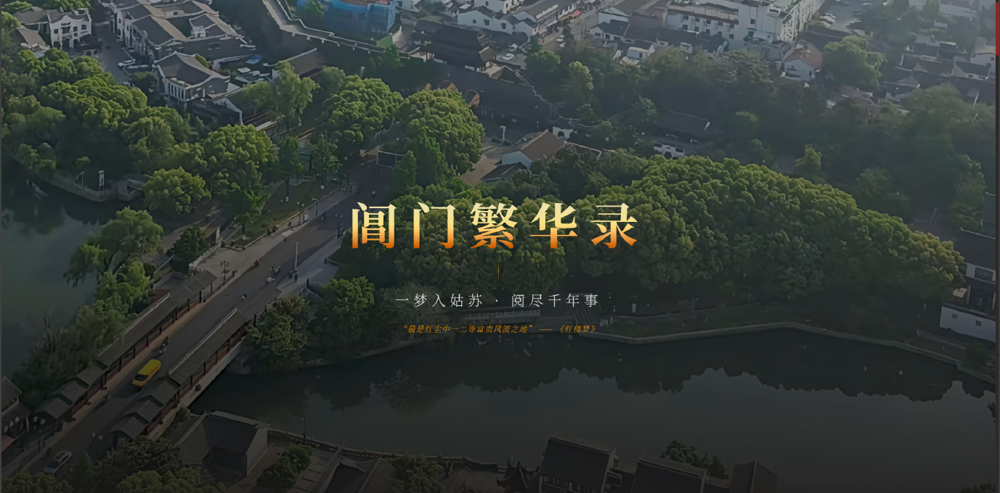
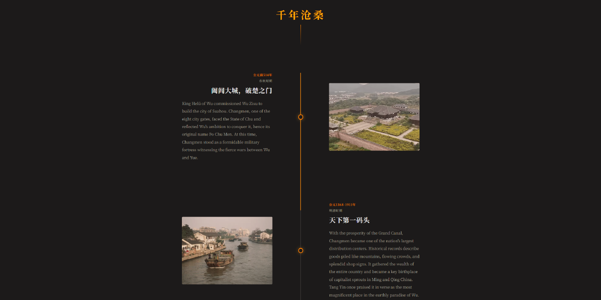
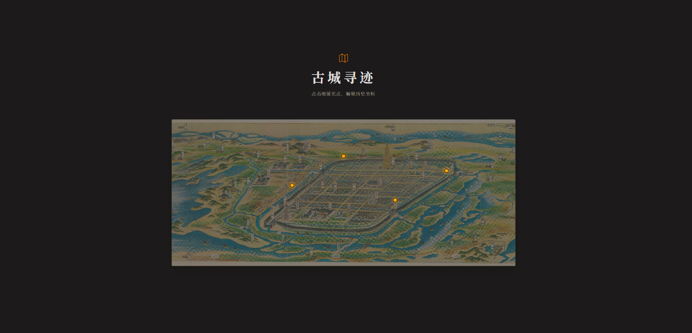
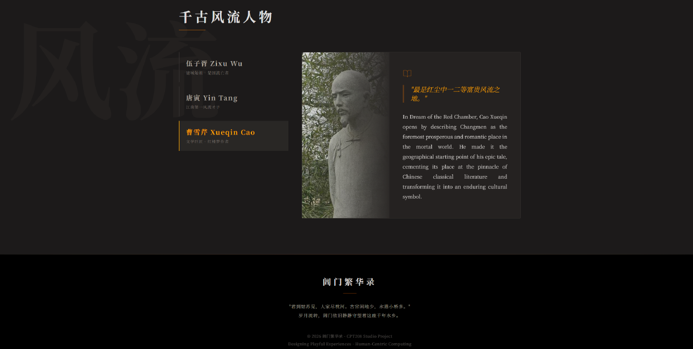

阊门繁华录 — An Interactive Digital Heritage Experience Through 2,500 Years of Suzhou History
Changmen Chronicles (阊门繁华录) is an interactive web experience bringing to life the 2,500-year history of Suzhou's Changmen Gate, celebrated in Dream of the Red Chamber as "the foremost prosperous place in the mortal world." Targeting cultural enthusiasts, students, and international tourists, our platform addresses a critical gap: traditional digital heritage presentations remain static and fail to emotionally engage audiences aged 18-35.
By combining immersive visual storytelling with human-centered design, we transform historical data into a cohesive narrative journey featuring an interactive timeline, annotated ancient map with clickable hotspots, biographical profiles of Wu Zixu, Tang Yin, and Cao Xueqin, and a visual gallery — all in bilingual Chinese-English format.
Changmen, the western gate of ancient Suzhou, dates to 514 BC when King Helu of Wu commissioned Wu Zixu to build the city. One of eight gates facing Chu (Po Chu Men), it served as a military fortress and economic lifeline for over two millennia. During the Ming and Qing dynasties, the Grand Canal made it one of the world's most vibrant commercial hubs. Yet the 1860 Gengshen Calamity devastated the area, and most digital presentations fail to communicate this heritage.
Grounded in the Interaction Design Lifecycle Model (Sharp et al., 2019), built on three pillars:
Lands on hero page with aerial Changmen view and golden calligraphy title.
Scrolls timeline from 514 BC through Ming-Qing era to present day.
Clicks map hotspots to unlock landmark stories and historical context.
Reads biographies of Wu Zixu, Tang Yin, Cao Xueqin, forming bonds.
Three iterations following the interaction design lifecycle: 1. Paper Wireframe (Low-fi sketches with 5 users) ➔ 2. Figma Mockup (High-fi dark system) ➔ 3. Web Prototype (React app with parallax).

Fig 1. Hero: Aerial Changmen

Fig 2. Interactive Timeline

Fig 3. Ancient City Map

Fig 4. Historical Figures
Digital storytelling transforms passive cultural consumption into active exploration. This HCD approach offers a replicable model for UNESCO heritage sites. Future work: ambient audio, AR map integration.
Q: Dark immersive theme vs. light academic layout?
| Option | Strengths | Weaknesses |
|---|---|---|
| A. Dark Theme | Cinematic; gold accents echo imperial aesthetics | Print unfriendly |
| B. Light Academic | Readable, conventional | Less engaging |
| C. Hybrid | Balances both | Complex, inconsistent |
Selected Option A: Target audience (18-35) prioritized emotional engagement. Dark background evokes a museum at night.